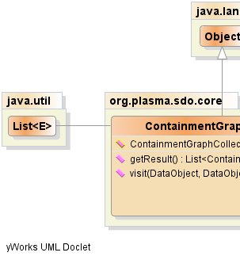
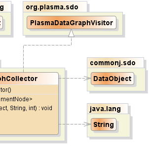

public class ContainmentGraphCollector extends java.lang.Object implements PlasmaDataGraphVisitor
accept() passing
this visitor to trigger the traversal from a given source
data object.PlasmaDataGraphVisitor|  |  |
| Constructor and Description |
|---|
ContainmentGraphCollector() |
| Modifier and Type | Method and Description |
|---|---|
java.util.List<ContainmentNode> |
getResult()
Returns the nodes which are
part of the contiguous containment hierarchy from
the given source.
|
void |
visit(commonj.sdo.DataObject target,
commonj.sdo.DataObject source,
java.lang.String sourcePropertyName,
int level)
Called by the graph traversal algorithm (as
part of the visitor pattern) when a graph node
is encountered.
|
public void visit(commonj.sdo.DataObject target,
commonj.sdo.DataObject source,
java.lang.String sourcePropertyName,
int level)
visit in interface PlasmaDataGraphVisitorpublic java.util.List<ContainmentNode> getResult()
PlasmaSDO™ and PlasmaQuery™ are trademarks of TerraMeta Software, Inc. Copyright © 2011 - All Rights Reserved.